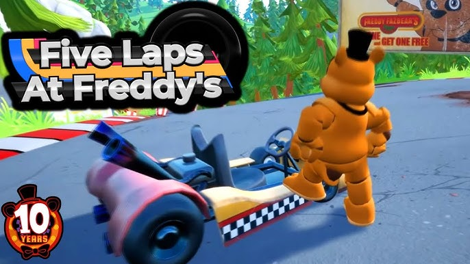
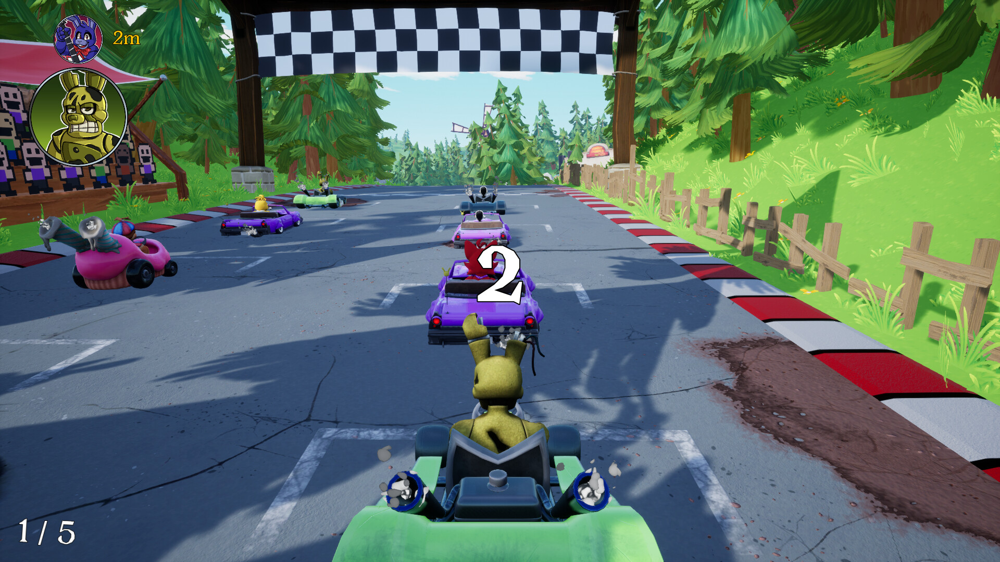
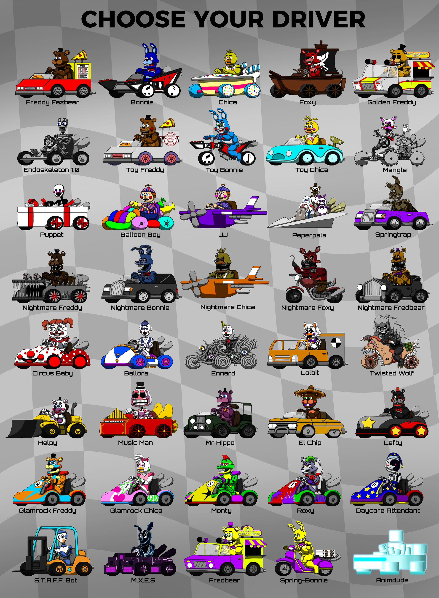
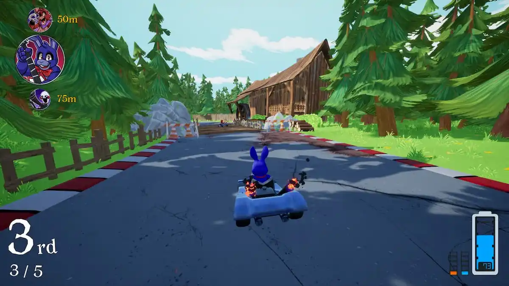

Five Laps at Freddy's é um jogo de corrida da franquia Five Nights at Freddy's feito por Clickteam LCC.
Demo Lançada em 7 de agosto de 2024 sendo lançado completamente em 2025, anunciado dia 19 de junho de 2024 como parte das celebrações de 10 anos da franquia. Além de ser uma fan-made, ou seja, não oficial.
"Five Laps at Freddy's" é um jogo de corrida inspirado no universo de Five Nights at Freddy's. Nele, os jogadores controlam animatrônicos da franquia FNaF em uma série de corridas em pistas assustadoras. O jogo mistura mecânicas de corrida com a atmosfera de terror característica da série, criando uma experiência única e tensa.
Tem as mecânicas básicas de Mario Kart, existem vários mapas, durante as corridas podemos pegar itens que nos ajudam. Além disso é possível escolher entre vários animatrônicos, cada um com as suas características que influenciam o desempenho nas corridas.
  